The backend was strong and the reporting around it was not. Two client apps, all QA automation and most of production infrastructure did not exist, while the status documents put the product at 86%. That gap is now closed: everything the testing plan asks for is built, and almost all of it is under automated test.
| Backend API | ~85% |
| Automated tests | 0 |
| Owner dashboard | ~10% |
| Player app | ~10% |
| PC kiosk | ~15% |
| Production infra | ~20% |
| Shippable | ~50% |
| Backend API | ~98% |
| Automated tests | 167 |
| Owner dashboard | ~80% |
| Player app | ~80% |
| PC kiosk | ~70% |
| Production infra | ~80% |
| Shippable | ~85% |
The starting documents claimed 26 modules built and 53 test cases with 34 verified. Checking each claim against the code told a different story.
| Documented as | What the code actually had |
|---|---|
| “53 test cases, ~34 verified” | Zero test files. No test runner in dependencies, no CI. The Python smoke scripts the doc referred to were not in the repository. Every “verified” meant “someone once watched it work”. |
| Leaderboard hierarchy ✅ built | The game scope accepted its parameter and ignored it, because sessions carried no game. A “game board” was the global board renamed. The old test only asserted HTTP 200, so it could not tell. |
| Auth “Google-ready” | A googleId field on two schemas. No OAuth flow, no library. |
| 2FA in the security list | A twoFactorEnabled: false boolean. No TOTP anywhere. |
| Redis, BullMQ, Sentry, PostHog, FCM, Resend, Spaces | Redis ran in Docker and the code never connected to it. The rest were comments saying “in P6”. Zero code, zero dependencies. |
| Cross-zone, Smart Sync, data migration | No code at all — and the plan makes cross-zone a sign-off gate and two Smart Sync and two migration cases P0. |
| “Overall product ~86%” | Counted backend logic and treated documentation as a deliverable. Two whole client apps sat inside the “remaining 14%”. |
TODO(P5) and a development log line. In production the code was
generated, hashed, stored, and never sent.
JWT_ACCESS_SECRET silently used "dev-access-secret",
making every token forgeable. The same for the payment webhook secret, which
would have let anyone credit any wallet.
git log returned “not a git repository”.
No history, no review, no rollback, on software that moves money.
SEIKA runs a gaming zone: the PCs, the money, the shop, the events, and the player-facing progression that brings people back. One backend holds all the logic; three clients talk to it and decide nothing themselves.
Everything else hangs off this sequence, and its most important property is that identity and payment are two separate steps.
PENDING_AUTH with zero XP. This is the product's central rule: a QR scan never unlocks a PC.| Rule | How it is enforced |
|---|---|
| A QR scan is not an unlock | Attaching creates a locked session. Unlocking requires a payment source to pass, and the command comes from the server. |
| XP only from real play | XP is computed from valid session minutes. Logging in, scanning, or abandoning a scan earns nothing. |
| Wallet is money, Coins are not | Two separate ledgers. Coins are never cash-withdrawable and never appear in the money ledger. |
| Balance is never stored | It is the sum of an append-only ledger. There is no endpoint that writes a balance, and a test asserts that none exists. |
| Money moves atomically | Every debit, refund, booking payment and shop order commits inside a MongoDB transaction or rolls back whole. |
| Tenants are isolated | One owner cannot see another's players, wallets, sessions, orders, revenue, staff or audit trail. Co-hosted events share event data only. |
| Sensitive actions are logged | Who, what role, which zone, old and new values, and a reason where one is required. |
Built mobile-first, because the plan makes owner-on-a-phone a P0 case and an owner checks their zone from a phone far more often than from a desk. The sidebar becomes a bottom tab bar under 900px — same routes, same data, same permissions.
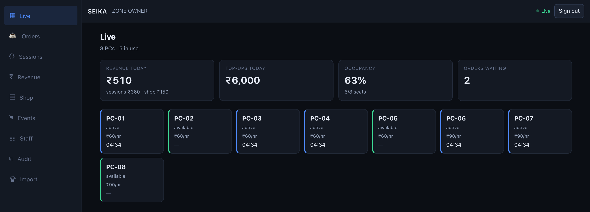
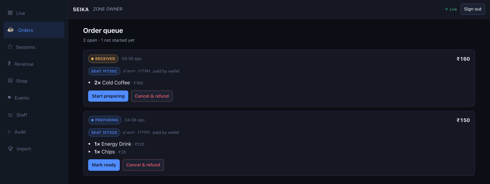
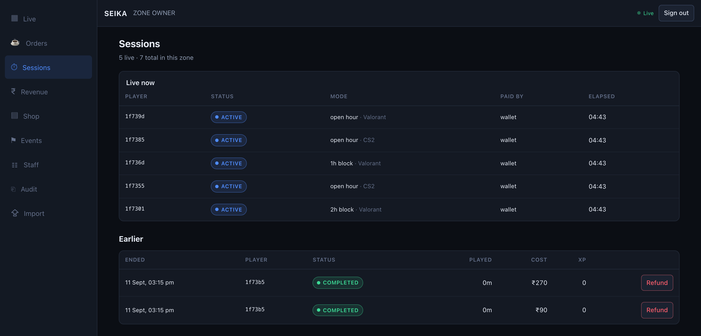
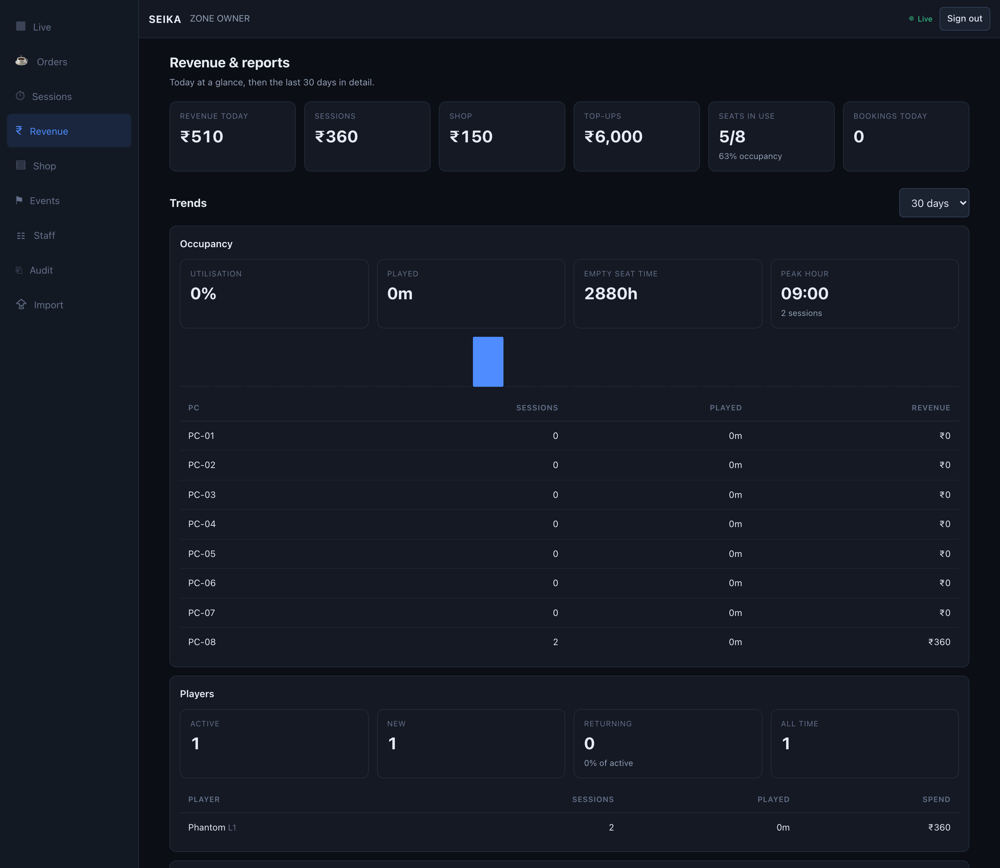
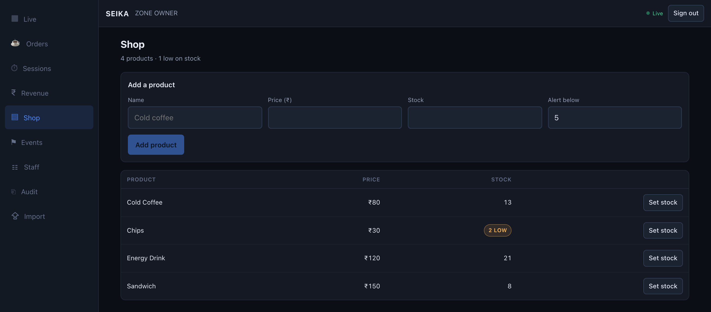
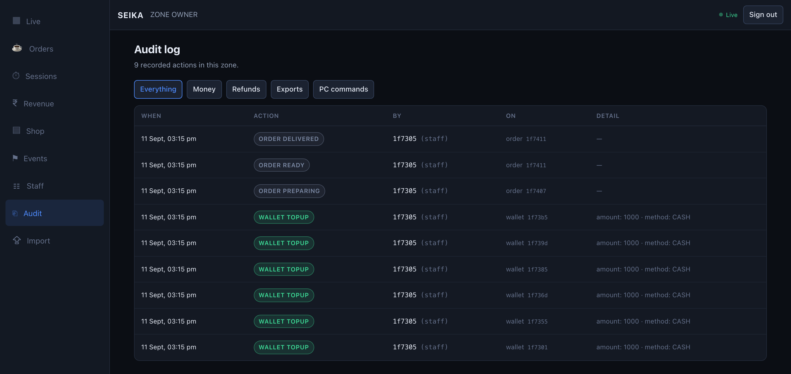
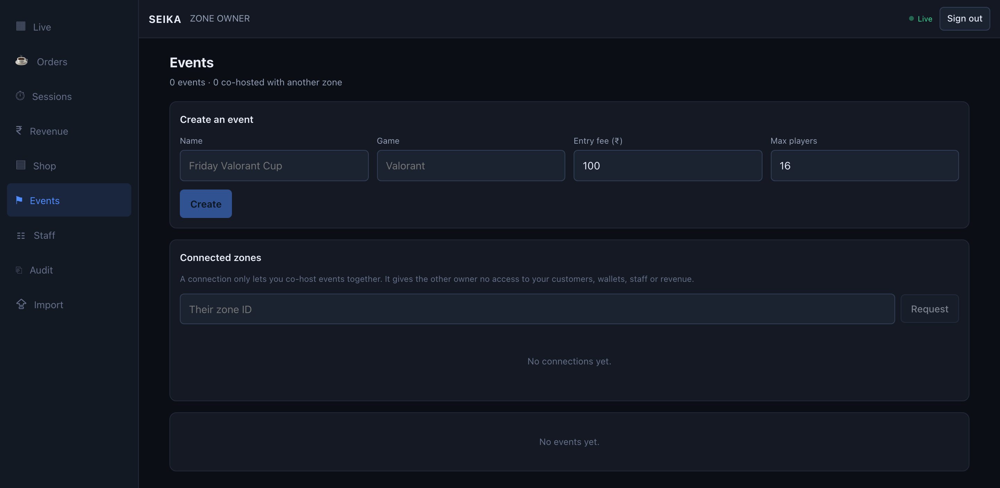
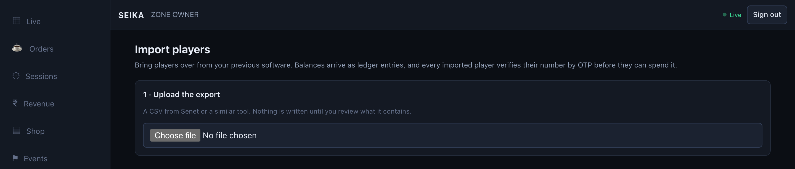
Not a cut-down version. The plan is explicit that mobile must not be a weaker security layer, so the phone layout runs the same code with the same permissions — only the navigation changes shape.
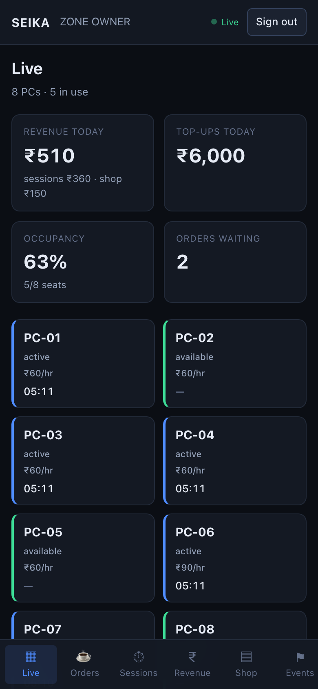
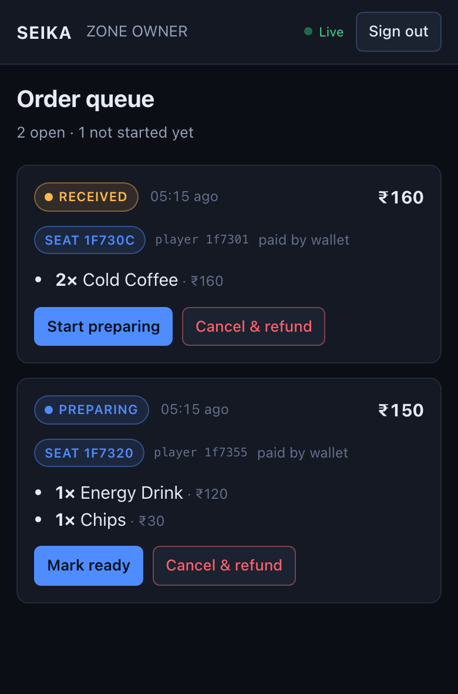
An installable PWA, designed for someone standing at a PC holding a drink. The two things they came for — their balance, and how to start playing — are above the fold on the first screen.
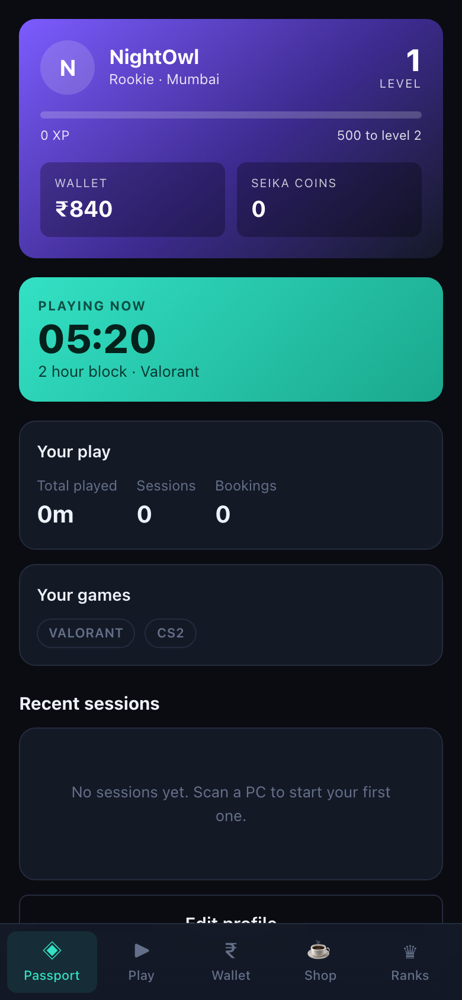
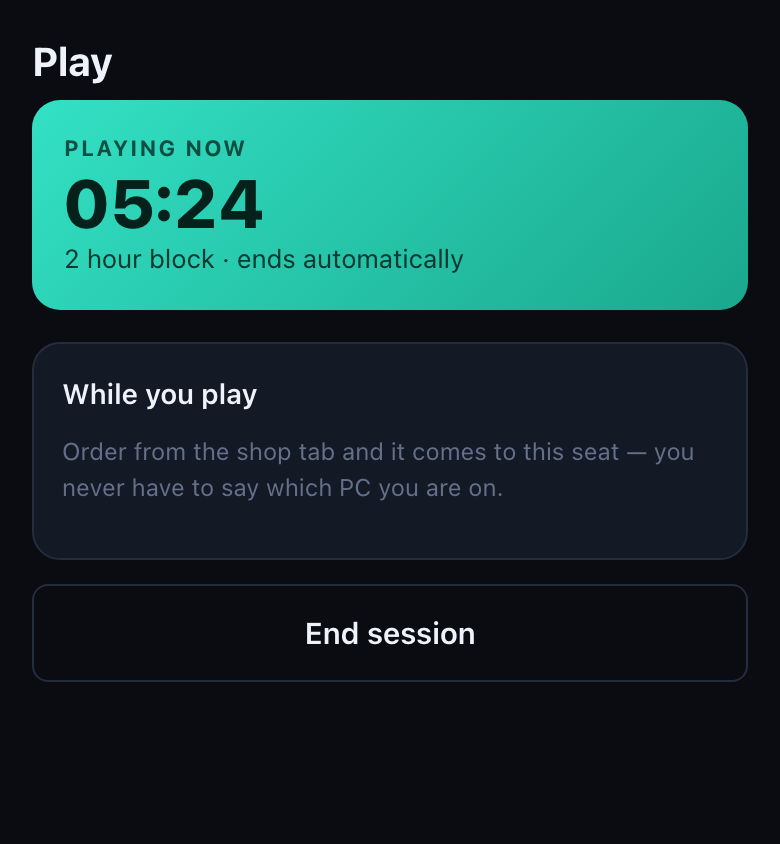
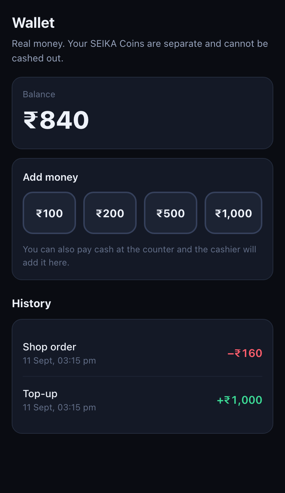
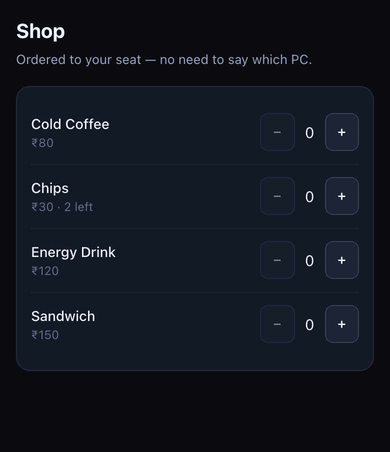
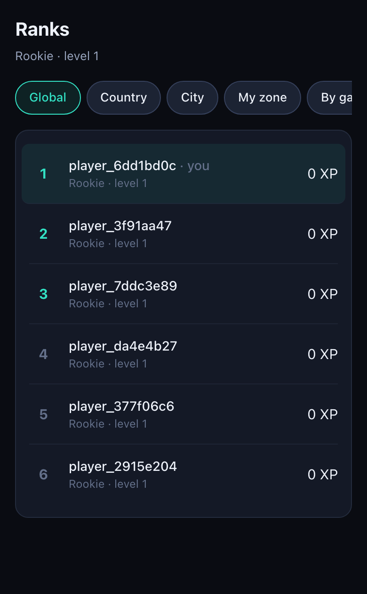
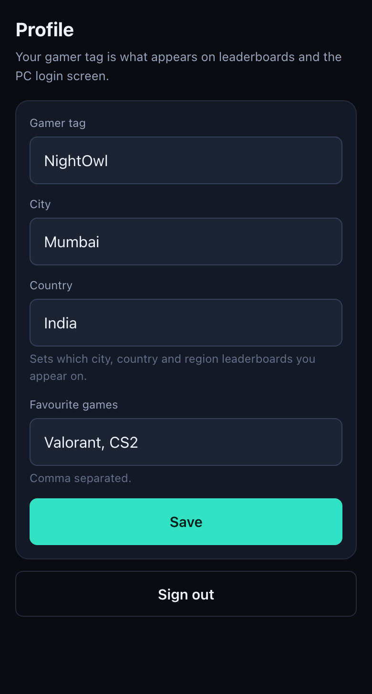
The hour picker is the moment the product's main rule is made honest to the player. Scanning has already happened and the PC is still locked; the screen says so in plain words, shows the price of every option before it is chosen, and dims anything their balance will not cover. Nothing is charged until they confirm.
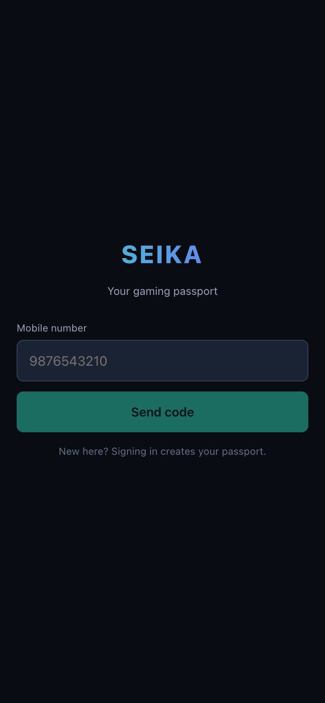
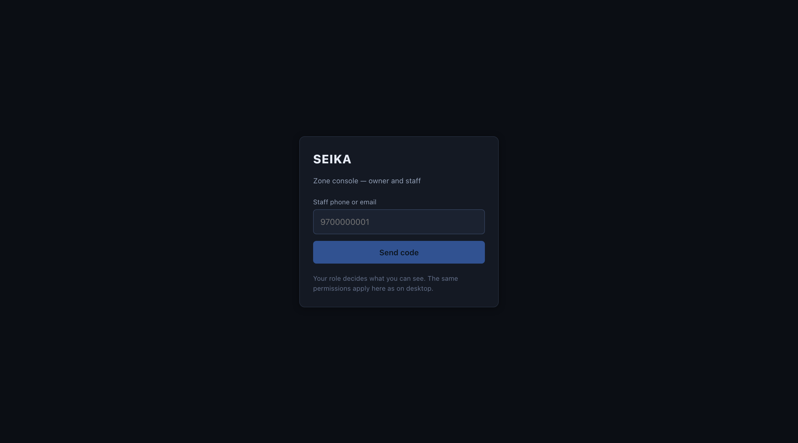
| ID | Module | Status | Tests | Notes |
|---|---|---|---|---|
| A | Auth & accounts | done | 7 | Profile customization added; OTP delivery built |
| B | Kiosk & session authorization | done | 10 | Six payment sources; Windows still untested |
| C | Top-up + hour selection | done | 8 | 1/2/3h blocks and Open Hour, price frozen at start |
| D | Wallet, payments, ledger | done | 23 | Provider abstraction added |
| E | Bookings | done | 11 | No-show automation still manual |
| F | Player mobile app | built | — | Built this round; no automated UI tests yet |
| G | Owner mobile app | built | — | Built this round; RBAC behind it covered by M |
| H | Shop & seated-zone | done | 11 | Seat binding now enforced server-side |
| I | XP, ranks, leaderboards | done | 13 | Game tracking added, so the game board is real |
| J | Events & cross-zone | built | 14 | Was zero code. §8 two-zone flow passes |
| K | Smart Sync | built | 24 | Was zero code. Policy server-side, client on the kiosk |
| L | Analytics & export | done | 12 | Six datasets in CSV, Excel and PDF |
| M | RBAC, security, isolation | done | 12 | |
| N | Data migration | built | 13 | Was zero code |
| — | Operations | built | 9 | Health, readiness, crash scrubbing, rate limiting |
The plan makes this a sign-off gate: the product cannot be signed off until a cross-zone flow has been tested end to end with two zones and two sets of players. Built: owner-to-owner connections, co-host invitations, per-zone registration where each player pays in their own zone's wallet, per-zone check-in, a shared bracket that exposes event data and nothing private, result verification requiring every zone to submit and agree, a dispute flow that blocks payout, and a prize split that credits each winner in their own zone so money never crosses a tenant boundary.
Two of its cases are P0 and both are about harm: syncing the wrong folder uploads a player's browser cookies, and syncing an anti-cheat folder gets them banned. The policy lives on the server, so it is one auditable decision and testable without a Windows box. The kiosk enumerates candidate files, asks the API to screen them, and reads only what came back allowed. Anti-cheat paths are refused before the whitelist is even consulted, so a mis-configured profile cannot opt a zone in.
A dependency-free CSV parser, column mapping guessed from common header names, and
a validation report that flags bad rows without stopping the good ones. A
carried-over balance becomes an OPENING_BALANCE ledger entry, never a
stored balance. Imported players are unverified until their first OTP login proves
they own the number. The whole import is one transaction.
Six datasets rendered as CSV, real .xlsx, or a landscape PDF. Values
beginning =, +, - or @ are
neutralised, because a player picks their own gamer tag and it ends up in a
spreadsheet on an owner's machine.
Eleven real defects, every one in code that had been recorded as verified. Four of them could only be found by running the product rather than reading it.
| Severity | Defect | Why it mattered |
|---|---|---|
| S1 | Two players could be billed on one PC | The “one live session per PC” index was keyed on {pcId, status}, making the pair unique — so a PC could hold a pending session and an active one at the same time. |
| S1 | Anyone could cancel a stranger's paid booking | The cancel path took an actor id and never checked it. Any signed-in player could free someone else's reserved seat by id, across zones. |
| S1 | Anyone could trigger a debit on another player's wallet | Paying a booking debited the booking's player, and the same missing check let a stranger start it. |
| S1 | A player in zone A could order from zone B | The order took zoneId from the request body. The seat is now derived from the player's live session, so it is impossible by construction. |
| S2 | The game leaderboard was the global board renamed | scope=game was accepted and ignored. The existing test asserted only HTTP 200, which a board with the wrong contents passes. |
| S2 | Migration uploads could never have worked | The endpoint documented 5 MB while the body parser ran at its 100 KB default, and an oversized body returned 500 instead of 413. |
| S2 | Order lines showed ₹NaN |
The queue converted the order total from Decimal128 but not the per-line prices, so any client computing price × quantity got NaN. Visible on the first order that reached the queue. |
| S2 | The SDK could not call the API from a browser | fetch was stored detached from window, throwing “Illegal invocation”. Nothing but a real browser would have caught it. |
| S2 | The player app could not reach the API | CORS allowed only port 3000; the player app runs on 3001. |
| S2 | Concurrent payment callbacks could double-credit | Idempotency was a read-then-write. Two simultaneous deliveries both passed the check. Now a conditional claim inside the transaction, tested with three at once. |
| S2 | Player profile customization did not exist | Plan case A6. The endpoint was simply absent. |
167 automated cases, mapped one-to-one onto the plan's modules, running in CI on every push. They replace 53 manual ones that had no reproducible form.
The API suite spins up its own in-memory MongoDB replica set — not a standalone — so every money path executes inside a real multi-document transaction. Testing a wallet against a standalone mongod silently skips the thing most worth testing. No Docker, no seeding, no manual steps.
| Area | Examples |
|---|---|
| Money | Balance equals the sum of the ledger. No endpoint can write a balance. A webhook replay credits once. A forged signature credits nothing. A failure between debit and commit leaves no partial write. A refund reverses wallet, XP and coins together. |
| The core rule | A QR scan leaves the PC locked with zero XP. An insufficient balance never unlocks. Cash needs a cashier. A one-use voucher is exhausted after one use. A package deducts minutes and leaves the wallet alone. |
| Isolation | Owner A cannot see owner B's sessions, orders, products, analytics, audit trail or wallets. Staff of one zone cannot act on another's bookings. A co-host sees shared event data and never private customer or financial data. |
| Hour selection | A 2-hour block freezes its price and bills the block even when ended early. Open Hour needs a deposit and meters actual minutes. Anything that is not 1, 2 or 3 hours is refused. |
| Cross-zone | The full two-zone flow the plan requires: connect, co-host, register and check in per zone, agree on results, dispute, resolve, settle — with prizes credited in each winner's own zone. |
| Smart Sync | Browser profiles, chat clients, credential stores, personal folders, executables, traversal and absolute paths all refused; anti-cheat paths refused even when a profile wrongly allows them, and logged. |
| Operations | Readiness returns 503 when Mongo is unreachable. Crash reports carry no OTPs, tokens, client keys or player data. Rate limiting degrades rather than failing the API. |
Wallet balances are derived from the ledger and nothing else. Losing that collection is not losing analytics; it is losing every customer's balance with no way to reconstruct it. There were no backups at all.
| Piece | What it does, and why that shape |
|---|---|
| Dump, every 4 hours | mongodump --oplog, so the dump is point-in-time consistent across collections and a restored ledger is trustworthy rather than approximately right. |
| Verify before trusting | Every dump is opened with --dryRun. A suspiciously small dump fails the job instead of replacing a good one. |
| Encrypt and move off-box | GPG, then upload. A backup on the same droplet does not survive the droplet. |
| Dead-man's switch | A ping on success. Without it, “no alert” and “no backups for three weeks” look identical. |
| Monthly restore drill | Restores into a throwaway database and asserts the collections exist, every balance is computable and non-negative, no ledger row is orphaned, and the session-guard index came back — that last one is a correctness check, since without it two players can be billed on one PC. |
A production deploy now fails loudly rather than running insecurely. It will not boot with development JWT or webhook secrets, without an OTP provider that can actually deliver, with payments in mock mode, with a localhost database URI, or with localhost left in the CORS list. Each of those fails silently and expensively otherwise.
/health for liveness; /health/ready pings Mongo for real and returns 503 when it cannot serve — a socket can be “connected” to a primary that no longer accepts writes. Sentry reports crashes with OTPs, tokens and player data scrubbed out.| Pri | Work | Estimate | Why |
|---|---|---|---|
| 1 | Run the kiosk on real Windows | ~1 week | Never done. Plan §11 forbids signing this off by simulation. Needs two PCs, Assigned Access configured, and a full day of lock, unlock, heartbeat and Smart Sync. |
| 2 | Restore drill against a production-sized dump | 1 day | The tooling exists and passes on test data. Timing it on real volume turns the recovery window into a number instead of a hope. |
| 3 | Remaining client screens | 1–2 weeks | Bookings and rewards in the player app; announcements and booking management in the console. |
| 4 | Load test a 40-PC zone | 2–3 days | Heartbeats, live sessions and the order queue under real concurrency. |
| 5 | Multi-node MongoDB | 2–3 days | The single node gives transactions, not high availability. |
| 6 | Google OAuth, 2FA, no-show automation | 1 week | Listed in the original plan, never built. None of them blocks a pilot. |
| 7 | Pilot zone | 2 weeks min. | One real zone with real PCs, a cash counter and real network drops, gated on zero open S0/S1 issues. |
pnpm install
pnpm dev:api:mem # API + in-memory Mongo replica set → :4000
pnpm dev:dashboard # owner console → :3000
pnpm dev:player # player app → :3001
No Docker needed: the API starts its own in-memory replica set, so transactions work out of the box.
POST /api/dev/seed creates a zone, a PC, and one staff member per role.
9700000001–04 (cashier, manager, technician, event manager).
pnpm test # 157 API + 10 kiosk
pnpm typecheck # every package
Roughly 20 seconds for the whole suite.
infra/README.md covers the full path: Docker Compose for Mongo and
Redis, nginx with certbot, the backup cron and the monthly restore drill, and
the deploy script.
The API refuses to boot on an unsafe production configuration, and tells you which setting is wrong.